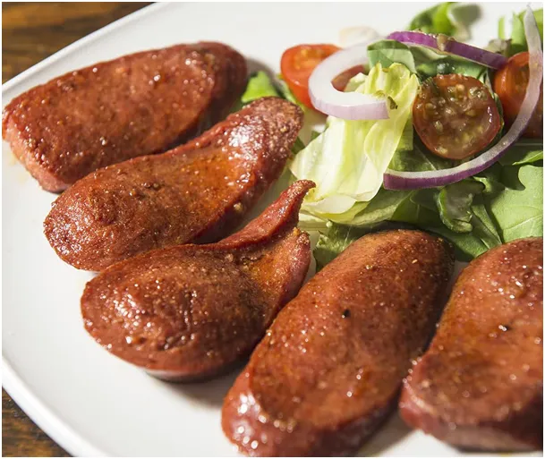
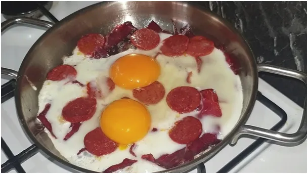
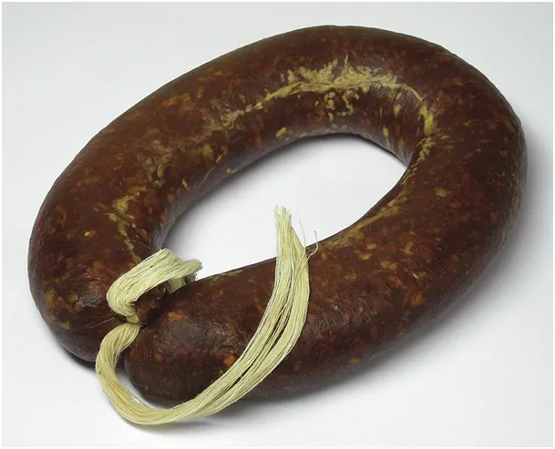
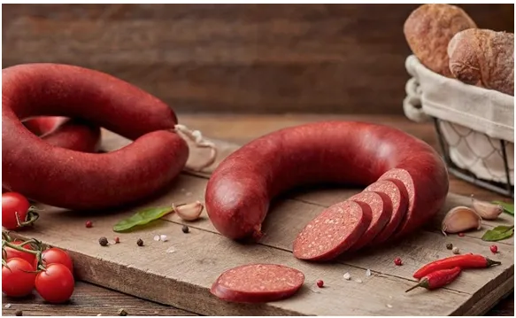
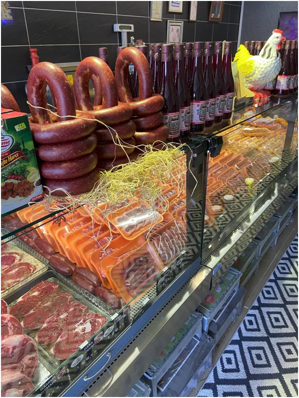

Sucuk czy to malutka woda ?
Jest w Tureckiej kuchni taki niezbędnik jak sucuk (sudżuk), czyli wolowa sucha, tłustawa kiełbasa, która może w lodówce leżeć wiekami. Fonetycznie narzuca się szybko litewski, a właściwie tatarski kindziuk, wędlina całkiem inna.
Aby zapamiętać to słowo rozebrałem je na składowe su-dżuk. Su to woda, a końcówka dżuk to zdrobnienie. Wyszło "wodeczka", czyli malutka woda. Coś w tym jest, bo sudżuk, jest nie tyle suchy co bezwodny. Smażony oddaje tłuszcz, a nie paruje. Jest mocno kminkowy, ale tym kminem, który u nas nazywany jest kminem rzymskim.

Jest dostępny u nas, w sklepach azjatyckich, ale ma swoją cenę, w której dominują cła euro-pejskie.

Zatęskniłem za wołową wędliną i okazuje się, że w Polsce wołowe przetwory to rynek niszowy. Wszelkiego rodzaju "pastarmi" itp. są drogie i bardzo przesolone, aby się nie psuły, gdy miesiącami zalegają sklepowe lady. Są dostępne paczkowane próżniowo pokrojone, wołowe, suche wędliny, ale aby używać ich na co dzień trzeba mieć fabrykę gotówki.

Postanowiłem, że sam zrobię wołową kiełbasę, w polskiej oryginalnej kuchni rzecz podstawową. Wieprzowina jest oznaką biedy, a raczej drożyzny. Jeszcze 25 lat temu był wybór wędlin wołowych, dziś to rzadkość. Tania wieprzowina i drób zdominowały współczesną kuchnię, to bardzo zły kierunek.

Szukam przepisu na wołową kiełbasę, na początek w słoikach, za typową "kiszkę" zabierzemy się następnym razem. Ktoś robił coś podobnego? Komentarze na dole możliwe są.
Paweł Klimczewski